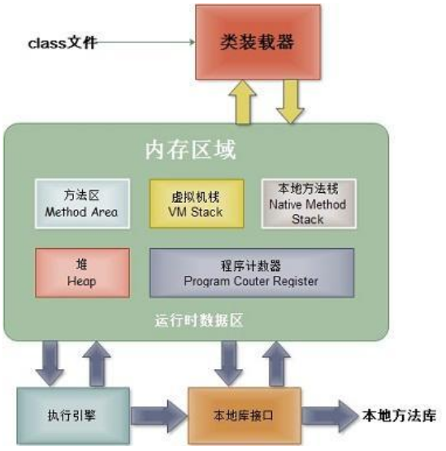

一、运行时数据区域

Java程序的执行流程：首先 .java源代码文件会被Java编译器编译为字节码文件（.class后缀），然后由JVM中的类加载器加载各个类的字节码文件，加载完毕之后，交由JVM执行引擎（包括即时编译器、垃圾收集器）执行。在整个程序执行过程中，JVM会用一段空间来存储程序执行期间需要用到的数据和相关信息，这段空间称之为运行时数据区。
1.程序计数器：是一块较小的内存空间，它可以看作当前线程所执行字节码的行号指示器，每个线程都有一个独立的程序计数器，因此它是线程私有的；此内存区域是唯一一个在Java虚拟机规范中没有规定任何OutOfMemoryError（OOM）情况的区域。
2.Java虚拟机栈：也是线程私有的，它的生命周期与线程相同。虚拟机栈描述的是Java方法执行的内存模型：每个方法在执行的同时都会创建一个栈帧用于存储局部变量表（存放了编译期可知的各种基本数据类型、对象引用和returnAddress类型）、操作数栈、动态链表、方法出口等信息。每个方法从调用到执行完成的过程，就对应着一个栈帧在虚拟机栈中从入栈到出栈的过程。
异常情况：如果线程请求的栈深度大于虚拟机所允许的深度，将会抛出StackOverflowError异常。
如果虚拟机动态扩展时无法申请到足够的内存，将会抛出OOM异常。
解决方法：对于出现的SOF异常，可以通过阅读错误堆栈找到问题所在；对于OOM异常，在不减少线程数或更换高位虚拟机的情况下，只能通过减少最大堆和减少栈容量来换取更多的线程。
3.本地方法栈：为虚拟机使用到的Native方法服务，是线程私有的。它会抛出SOF和OOM异常。
4.Java堆：是被所有线程共享的一块数据区域。在虚拟机启动时创建；它的目的是存放对象实例，并为对象实例分配内存；Java堆是垃圾收集器管理的主要区域；因此，Java堆可以细分为新生代和老年代。
异常情况：如果在堆中没有内存完成实例分配，并且堆也无法再扩展时，将会抛出OOM异常。
解决方法：先通过内存映射分析工具对Dump出来的堆转储快照进行分析，分清楚到底是出现了内存泄漏还是内存溢出；如果是内存泄漏，可进一步通过工具找到泄露对象是通过怎样的路径与GC Roots相关联并导致垃圾收集器无法自动回收它们的，掌握了泄露对象的类型信息和GC Roots引用链的信息，就可以比较准确地定位出泄露代码的位置；如果不存在泄露，那就是内存中的对象都必须存活着，那就应当检查虚拟机的堆参数与及其物理内存对比看是否还可以调大，从代码上检查是否存在某些对象生命周期太长、持有状态时间过长的情况，尝试减少程序运行期间内存消耗。
5.方法区：是线程共享的内存区域，用于存储已被虚拟机加载的类信息、常量、静态变量、即时编译器变异后的代码数据等。Java虚拟机规范对方法区的限制非常宽松，除了和Java堆一样不需要连续内存和可以选择固定大小或者可扩展外，还可以选择不实现垃圾收集。这个区域内存回收主要是针对常量池的回收和对类型的卸载。
运行时常量池是方法区的一部分，用于存放编译期生成的各种字面量和符号引用，这部分内容将在类加载后进入方法区的运行时常量池中存放。
异常情况：当方法区无法满足内存分配需要时，将会抛出OOM异常。
解决方法：调用GC对无用的类进行回收。
直接内存并不是虚拟机运行时数据区的一部分，但是这部分内存也被频繁使用。本机直接内存不受Java堆大小的限制，但会受到本地总内存大小及处理器寻址空间的限制。NIO类引入了一种基于通道和缓冲区的IO方法，它可以使用Native函数库直接分配堆外内存，然后通过一个存储在Java堆中的DirectByteBuffer对象作为这块内存的引用进行操作。
异常情况：当各个内存区域总和大于物理内存限制，导致动态扩展时出现OOM异常。
二、对象的创建过程
当虚拟机遇到一条new指令时，首先先检查这个指令的参数是否能在常量池中定位到一个类的符号引用，并且检查这个符号引用代表的类是否已被加载、解析和初始化过。如果没有，那必须先执行类的加载过程。
在类加载检查通过后，虚拟机将为新生对象分配内存。对象所需的内存大小在类加载完成时就已经确定；选择哪种分配方式由Java堆是否规整决定，如果Java堆中的内存是规整的，所有用过的内存放在一边，空闲内存放在另一边，中间放着一个指针作为临界指示器，那分配内存就是把指针向空闲空间那边挪动一段与对象大小相等的距离，这种分配方法称为指针碰撞。如果Java堆中内存是不规整的，虚拟机就必须维护一个列表，用来记录哪块内存时可用的，在分配时从列表中找到一块足够大的空间划分给对象实例，并更新列表上的记录，这种分配方法称为空闲列表。
另外在多线程情况下，对象创建并不是线程安全的，可能出现正给对象A分配内存，指针还没来得及修改，对象B又同时使用了原来的指针来分配内存的情况。解决这种问题的方案，一种是对分配内存空间的动作进行同步处理--实际上虚拟机采用CAS配上失败重试的方式保证更新操作的原子性；另一种是把内存分配的动作按照线程划分在不同的空间进行，即每个线程在Java堆中预先分配一小块内存，称为本地线程分配缓冲。哪个线程要分配内存，就在哪个线程的TLAB上分配，只有TLAB用完并分配新的TLAB时，才需要同步锁定。
内存分配完成后，虚拟机需要将分配到内存空间都初始化为零值。这一操作保证了对象的实例字段在Java代码中可以不赋初始值就直接使用。接下来，虚拟机对对象进行必要的设置，并将这些设置存放在对象的对象头中。最后执行 init方法把对象按照意愿进行初始化，这样一个真正可用的对象就产生了。
三、对象的布局
对象在内存中存储的布局可以分为：对象头、实例数据和对齐填充。对象头包括两部分信息：一部分用于存储对象自身的运行时数据；另一部分是类型指针，即对象指向它的类元数据的指针，虚拟机通过这个指针确定这个对象是哪个类的实例。实例数据部分是对象真正存储的有效信息。对齐填充并不是必然存在的，它仅仅起到占位符的作用。
四、对象的访问定位
如果使用句柄访问的话，那么Java堆将会划分一块内存来作为句柄池，referance中存储的是对象的句柄地址，而句柄中包含了对象实例数据与类型数据各自的具体地址信息。
使用句柄访问的好处就是referance中存储的是稳定的句柄地址，在对象被移动时只会改变句柄的实例数据指针，而referance本身不需要修改。
如果使用直接指针访问，那么Java堆对象的布局就必须考虑如何放置访问类型数据的相关信息，而referance中存储的直接是对象的地址。
使用直接指针访问的好处就是速度快，它节省了一次指针定位的开销。